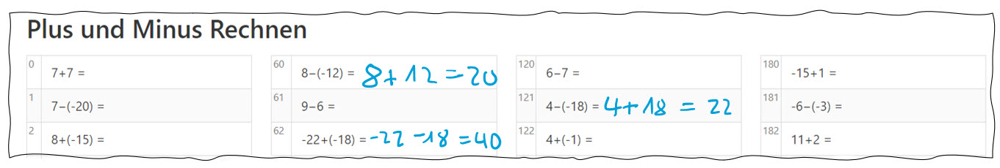
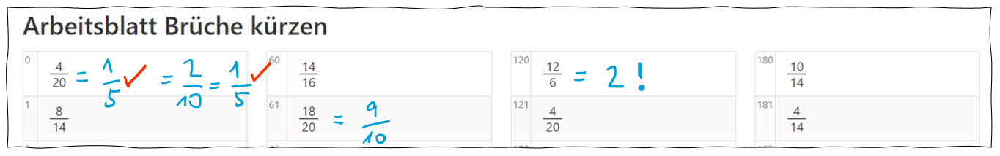
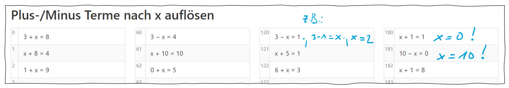
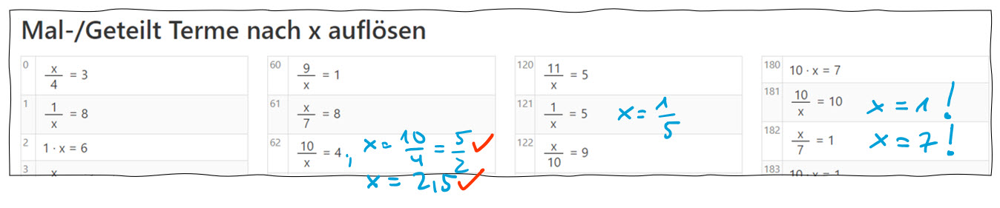

Mehr Punkte in Mathe: die Basics trainieren!
Arbeitsblätter mit je 160 kleinen Mathe-Aufgaben für Unterricht und zuhause, für Selbstlerner, Teams und Klassen - für Web, Handy, Print
: Die aktuellen Mathe-Aufgabensammlungen sind da!
Mathe braucht Übung! Und ideal fürs Üben sind Aufgaben, die du gleichmäßig und zügig durcharbeiten kannst. So entsteht Routine und du schaffst es immer besser. Dieses Framework bietet dir zu jedem Thema 160 Aufgaben mit Lösungen. Alle gemacht? Dann rufe einfach die Seiten neu auf und du hast lauter neue Aufgaben! Aber du musst nicht immer alle Aufgaben machen. Setz dich auch ran, wenn du nur 10 Aufgaben machen willst. Egal, wie viele Aufgaben du probierst: dein Ziel ist 100%. Also: alle richtig!
Schau dir die Bilder an: überall sind noch Plätze frei - für dich! Aber wo möchtest du dabei sein? Das entscheidest du selbst.
Tipps zu den einzelnen Arbeitsblättern

Plus-Minus, also Addieren und Subtrahieren. Steigere deine Sicherheit im Umgang mit Klammern. Beim Klammer-Auflösen schreibe den Zwischenschritt hin. Es bringt nichts, das Ergebnis so ungefähr zu raten und dann bei den Lösungen nachzuschauen! Das einzige, was zählt, ist dein trainierter Ablauf, den du immer sicherer kannst. Dein Ziel: fehlerfrei rechnen!

Brüche kürzen. Wenn du noch unsicher bist, fange mit dem Teiler 2 an, also teile die obere und untere Zahl (Zähler und Nenner) durch 2. Oder dir fällt direkt ein größerer Teiler ein, z.B. 4. Wenn das Ergebnis eine ganze Zahl ist, solltest du das checken (kleines Einmaleins!). Schreib nie sowas wie 2/1 als Ergebnis, das nervt, sondern natürlich ist 2/1 = 2! S. Aufgabe 120, hier war der Teiler die 6. Oder du teilst erstmal durch 2 und merkst dann, dass du auch noch durch 3 teilen kannst.

Additive Terme umstellen und eine Gleichung lösen. Hier geht es darum, durch Umformungen der Gleichung die Einzelterme (also die Zahlen und das x) so zu verschieben und die Seiten wechseln zu lassen, das x alleine auf einer Seite steht. Dann einfach ausrechnen. Oft gibt es mehrere Möglichkeiten - auch je nachdem, wie du es dir gemerkt hast. In jedem Fall: es gibt auch Fälle, wo es nichts zu rechnen gibt, z.B. 180, 181 und wo du das Ergebnis direkt ablesen kannst. Das gehört auch zur Routine, die du hier lernst.

Multiplikative Terme umstellen. Das ist ein besonders wichtiges, zentrales Mathe-Thema. Und dabei einfach: es gibt eigentlich nur 3 (!) verschiedene Aufgaben. Du brauchst diese Routine in ganz vielen Bereichen: in Mathe, in Physik, auch bei kaufmännischen Berechnungen. Auch hier kannt du einige Ergebnisse direkt ablesen, ohne zu rechnen (s. 181, 182). Das solltest du checken.
Tipps zum Einsatz der Matheaufgaben in der Schule und zuhause
Formate: die Aufgaben können am PC ausgedruckt werden. Die Lösungen sind dann auf einer extra Seite. Alternativ können Aufgaben als PDF gedruckt (also gespeichert) werden und sind so auch offline verwendbar.
Falls Handy: schreibe die ganze Aufgabe hin. Wenn du immer nur die Lösungszahl notierst, und dann in die Lösungen schaust, hast du mehr mit Verwaltung zu tun als mit dem Rechnen. Also hinschreiben: die Aufgabennummer und die Aufgabe mit Lösung. Am Ende die zweifelhaften Aufgaben vergleichen. Also: Handy in der einen Hand (evtl. Querformat), mit der anderen schreiben.
Trainiere jeden Tag. Mindestens während der Vorbereitung von Klassenarbeiten, BBR oder MSA. Jeden Tag Kontakt mit Mathe.
Arbeite auch an der Sprache, das ist gut für Textaufgaben. Formuliere die Aufgaben, spreche sie laut. Wenn du unsicher bist, tausch dich aus, auch zuhause. Mache Mathe zu einem Thema, über das man reden kann - und zwar inhaltlich, d.h. nicht nur "ich muss jetzt Mathe machen" sondern z.B. "ich übe jetzt wieder Brüche kürzen".
In der Schule, auch in Vertretungsstunden, können Aufgaben gerechnet werden. Z.B. Lösungen erst am Ende durchsehen. Die Aufgaben können auch am Smartboard® angezeigt werden. Das können auch Schüler durchführen und moderieren. Werdet selbstständig als Lerngruppe!
Check deinen Fortschritt: z.B. du machst an einem Tag 50 Aufgaben und du machst 40 richtig, dann schreibe deine Quote auf (40/50 = 80%, oder?). Verfolge die Quote über die Tage, wird sie besser? Merke dir Aufgabentypen, wo du hängst und lass dir auch mal helfen.
Tipps für Eltern und Nachhilfelehrer*innen
Zuhause kann es nicht mehr die Ausrede geben, dass nichts gemacht werden kann, weil keine Aufgaben da sind. Jetzt sind immer Aufgaben da!
Diese Aufgabensammlungen sind ideal für "Hilfe zur Selbsthilfe". Sie müssen nicht selbst an Aufgaben knobeln, sondern es sind alle Ergebnisse da. Sie können stattdessen Ihre Tochter oder Ihren Sohn coachen, was den Ablauf betrifft. Z.B. Regelmäßige Arbeitszeiten, Fehlerquote, Sprachfähigkeit (lassen Sie sich Aufgaben beschreiben).
Wird Nachhilfe jetzt überflüssig? Nein, ganz im Gegenteil. Wenn viele Aufgaben je Thema da sind und Lösungen vorhanden sind, kann sich die Nachhilfelehrkraft kannst auf den Arbeitsprozess konzentrieren. Z.B. typische Schwachstellen identifizieren und bearbeiten.
Wichtig für alle Lernhelfer: kontinuierliches Arbeiten. Der Stift muss sich mit einer vernünftigen Durchschnittsgeschwindigkeit von Aufgabe zu Aufgabe bewegen. Damit das klappt: besser kurze Übungszeiten (z.B. 20 Minuten) und richtig konzentriert arbeiten.